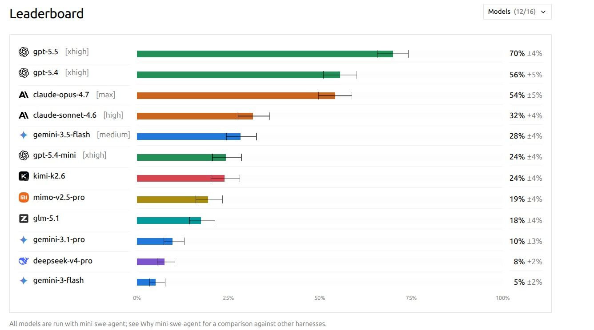

How AI agents are measured on real-world software engineering

May 2026 SWE Benchmark Results
SWE benchmarks test whether an AI agent can understand a codebase, locate the right files, reason about a fix, implement it, and verify it passes tests — the full engineering loop, not just code completion.
Traditional coding benchmarks (HumanEval, MBPP) test isolated function completion. SWE benchmarks test the complete software engineering workflow:
Tasks written from scratch, not from existing commits or PRs. No model has seen the solution during pretraining.
Tasks span many repositories and languages, not just Python scripts.
Solutions require understanding multiple files, not just one function.
Tests software behavior, not implementation details. Hand-written verifiers.
Today's leading models cluster within a narrow score band on existing benchmarks. DeepSWE separates them with harder, longer, contamination-free tasks.
SWE benchmarks are the proving ground for the patterns covered in this certification:
Agent perceives codebase, thinks about the fix, acts by editing files, then verifies — the full Perceive-Think-Act cycle.
Complex tasks may need separate agents for research, coding, and testing, coordinated by a main agent.
Agent runs tests, checks results, retries if failures — the core reliability pattern.
Large codebases require smart context window usage — summarization, semantic search, compression.
File system tools, test runners, and linters are all MCP tools the agent calls during the loop.